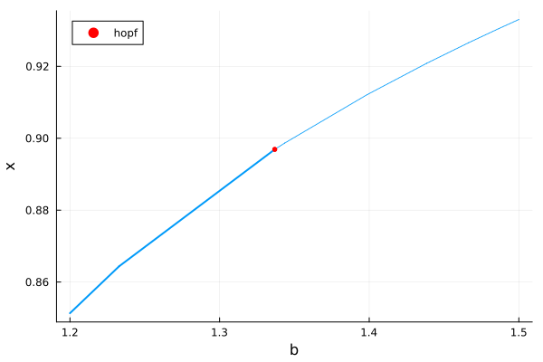
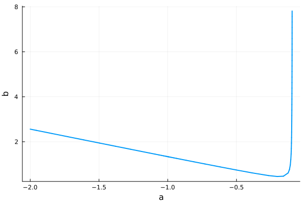
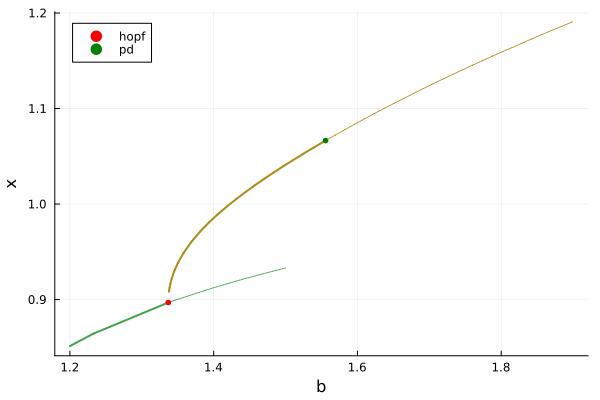
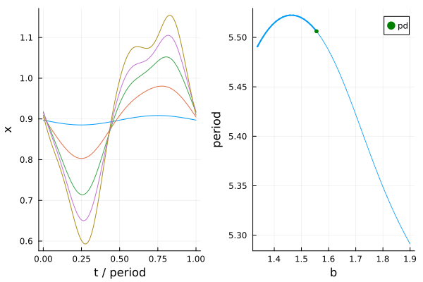
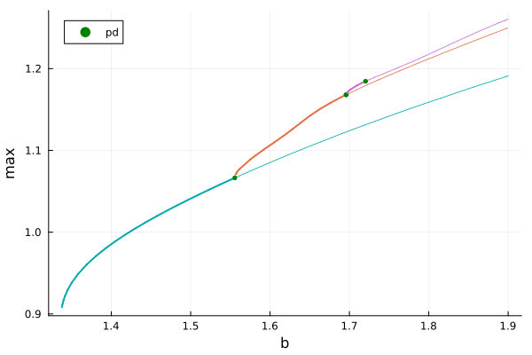

Mackey–Glass model (periodic orbits, period doubling)
The Mackey–Glass equation [Mackey] is a classical delay differential equation with a nonlinear delayed feedback. We consider the scalar equation
\[\dot x(t)=a x(t)+b\frac{x(t-\tau)}{1+x(t-\tau)^{10}},\qquad \tau=2,\]
with parameters $a=-1$ and $b=1.5$. The delay is constant and the nonlinearity is the usual Mackey–Glass feedback $x^{10}/(1+x^{10})$.
This tutorial follows the script examples/mackey-glass.jl. We compute the equilibrium branch, continue the Hopf bifurcation, switch to the branch of periodic orbits, and then follow period-doubling bifurcations.
Problem setup
We first define the vector field and the delay. The delayed value is stored in xd.u[1][1] because delaysF(par) returns a single delay.
using DDEBifurcationKit, Plotsusing BifurcationKitconst BK = BifurcationKitfunction MKG(x, xd, p) (; a, b) = p y = xd.u[1][1] return [a * x[1] + b * y / (1 + y^10)]enddelaysF(par) = [2.0]pars = (a = -1.0, b = 1.5)x0 = [(-pars.b / pars.a - 1)^(1/10)]prob = ConstantDDEBifProblem(MKG, delaysF, x0, pars, (@optic _.b); record_from_solution = (x, p; k...) -> x[1], R01 = BK.AutoDiff(), R11 = BK.AutoDiff(), R02 = BK.AutoDiff())Equilibrium branch and Hopf bifurcation
We continue the equilibrium with respect to $b$. The continuation is performed with PALC and detects codimension-one bifurcations of equilibria.
optn = NewtonPar(eigsolver = DDE_DefaultEig(maxit = 150, tol = 1e-8))opts = ContinuationPar( p_max = 1.6, p_min = 1.2, newton_options = optn, ds = -0.01, dsmax = 0.1, detect_bifurcation = 3, nev = 5, n_inversion = 6, max_steps = 20)br = continuation(prob, PALC(), opts)plot(br)
A Hopf bifurcation is detected on this branch. We can compute its normal form
hopf = BK.get_normal_form(br, 1)SuperCritical - Hopf bifurcation point at b ≈ 1.336844758328821.
Frequency ω ≈ 1.1444594337931342
Period of the periodic orbit ≈ 5.490090012500433
Normal form z⋅(iω + a⋅δb + b⋅|z|²):
┌─ a = 1.4530930892797966 - 0.2959509433880758im
└─ b = -42.83811791310619 + 11.998561730452089im
and continue the Hopf point in the two-parameter plane $(a,b)$:
brhopf = continuation(br, 1, (@optic _.a), ContinuationPar(opts, p_min = -2.0, ds = 0.001, max_steps = 50); bothside = Val(true))plot(brhopf)
Periodic orbits from the Hopf point
We now switch to the branch of periodic orbits using orthogonal collocation. The callbacks below record the amplitude and period of each orbit and plot the corresponding time series.
The function BK.get_periodic_orbit converts the collocation representation into a time series (t, x(t)).
function recordPO(x, p; iter, state, k...) xtt = BK.get_periodic_orbit(BK.getprob(iter), x, nothing) mi, ma = extrema(xtt[1, :]) return (max = ma, min = mi, amp = ma - mi, period = x[end])endfunction plotPO(x, p; iter, state, k...) xtt = BK.get_periodic_orbit(BK.getprob(iter), x, nothing) plot!(xtt.t, xtt[1, :]; label = "x(t)", k...) plot!(br; subplot = 1, putspecialptlegend = false)endargs_po = ( record_from_solution = recordPO, plot_solution = plotPO, normC = norminf)opts_po_cont = ContinuationPar( dsmax = 0.01, ds = 0.001, dsmin = 1e-4, p_max = 1.9, max_steps = 300, nev = 20, tol_stability = 1e-5, n_inversion = 4)probpo = Collocation(30, 4; jacobian = BK.DenseAnalyticalInplace(), meshadapt = true)br_pocoll = continuation(br, 1, opts_po_cont, probpo; args_po...)plot(br, br_pocoll)
We can also inspect a few orbits along the branch:
scene = plot(layout = 2)for ii in 1:10:length(br_pocoll.sol) po = BK.get_periodic_orbit(br_pocoll, ii) plot!(scene, po.t ./ po.t[end], po[1, :], label = "", subplot = 1)endxlabel!(scene, "t / period", subplot = 1)ylabel!(scene, "x", subplot = 1)plot!(scene, br_pocoll, vars = (:param, :period), subplot = 2)scene
Period-doubling and branch switching
A period-doubling bifurcation is detected along the periodic orbit branch. We compute its normal form and switch to the period-doubled branch.
pd_idx = findfirst(s -> s.type == :pd, br_pocoll.specialpoint)BK.get_normal_form(br_pocoll, pd_idx; detailed = Val(false))bo_pd = continuation(deepcopy(br_pocoll), pd_idx, ContinuationPar(BK.getcontparams(br_pocoll); max_steps = 100); args_po..., δp = 0.001, ampfactor = 0.1, normal_form_kwargs = (detailed = Val(false),))pd_idx2 = findfirst(s -> s.type == :pd, bo_pd.specialpoint)bo_pd2 = continuation(deepcopy(bo_pd), pd_idx2, ContinuationPar(BK.getcontparams(bo_pd); max_steps = 50); args_po..., δp = 0.001, ampfactor = 0.1, normal_form_kwargs = (detailed = Val(false),))plot(bo_pd, bo_pd2, br_pocoll)
The keyword δp controls the parameter step used to initialize the branch and ampfactor scales the eigenvector used to perturb the periodic orbit. The second call performs another period doubling, yielding a branch of period-$4T$ orbits.
Continuation of period-doubling points
Finally, we continue the period-doubling points in the two-parameter plane $(a,b)$. We perform this continuation from the primary periodic orbit branch and from the period-doubled branch.
pds = BK.continuation(deepcopy(br_pocoll), pd_idx, (@optic _.a),
ContinuationPar(BK.getcontparams(br_pocoll);
ds = -0.001, detect_bifurcation = 0,
p_min = -1.0, max_steps = 300);
alg = PALC(tangent = Bordered()),
update_minaug_every_step = 1,
detect_codim2_bifurcation = 0,
jacobian_ma = BK.MinAug(),
bothside = Val(true),
start_with_eigen = Val(false),
callback_newton = BK.cbMaxNorm(1.0))
pds_2 = BK.continuation(deepcopy(bo_pd), pd_idx2, (@optic _.a),
ContinuationPar(BK.getcontparams(br_pocoll);
ds = -0.001, detect_bifurcation = 0,
p_min = -1.0, max_steps = 300);
alg = PALC(tangent = Bordered()),
update_minaug_every_step = 1,
detect_codim2_bifurcation = 0,
jacobian_ma = BK.MinAug(),
bothside = Val(true),
start_with_eigen = Val(false),
callback_newton = BK.cbMaxNorm(1.0))
plot(pds, vars = (:b, :period))The two period-doubling curves can be plotted together with the Hopf curve:
plot(brhopf, pds, pds_2, ylims = (0, 5))The continuation parameters above are chosen to keep the documentation build reasonably short. Increase max_steps and adjust p_min/p_max to compute the full bifurcation curves.
References
- MackeyMackey, M. C., & Glass, L. (1977). Oscillation and chaos in physiological control systems. Science, 197(4300), 287–289. https://doi.org/10.1126/science.267326